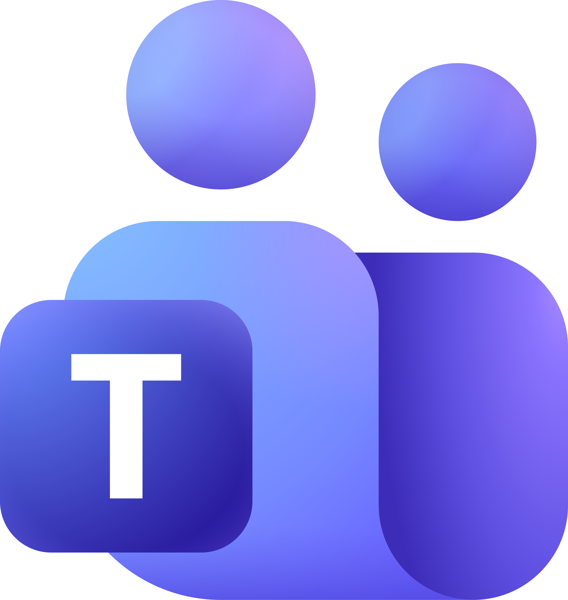
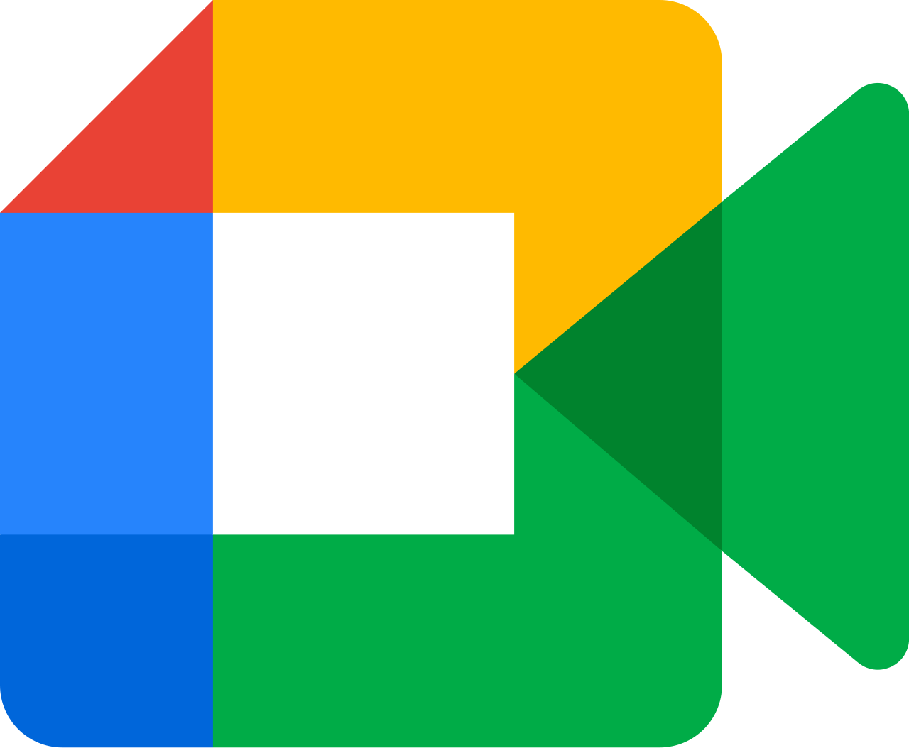
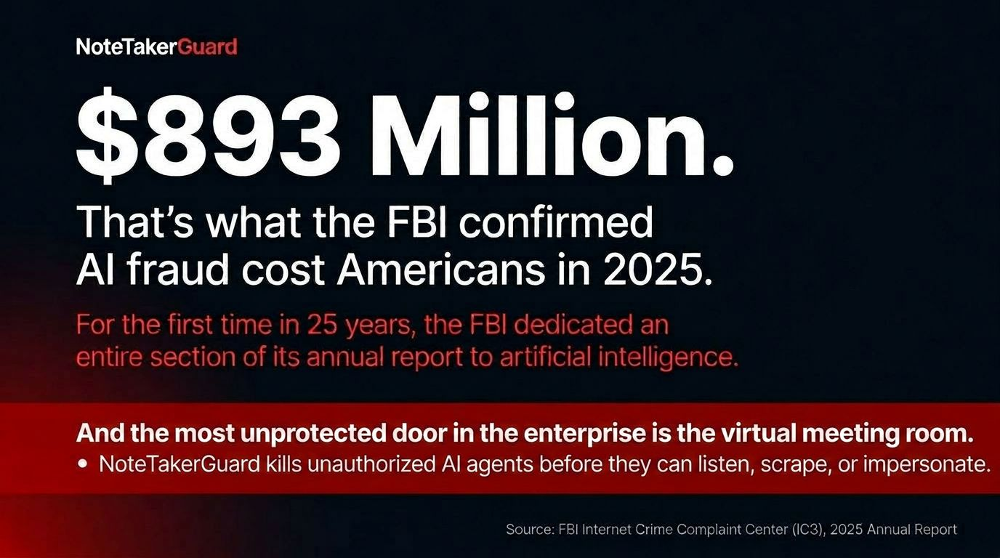
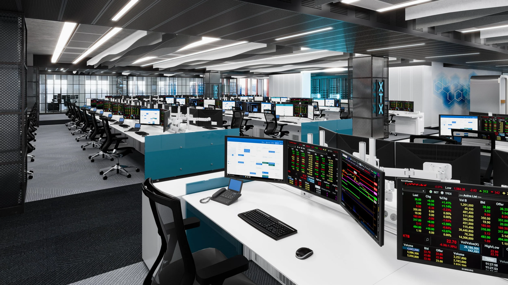
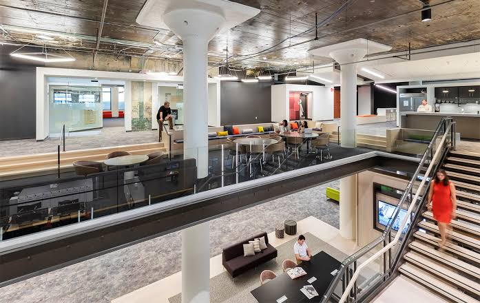
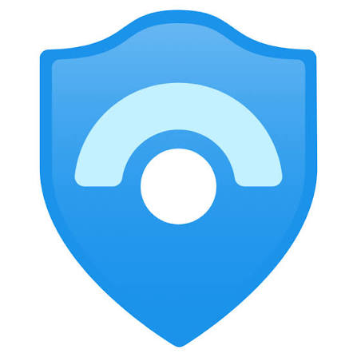
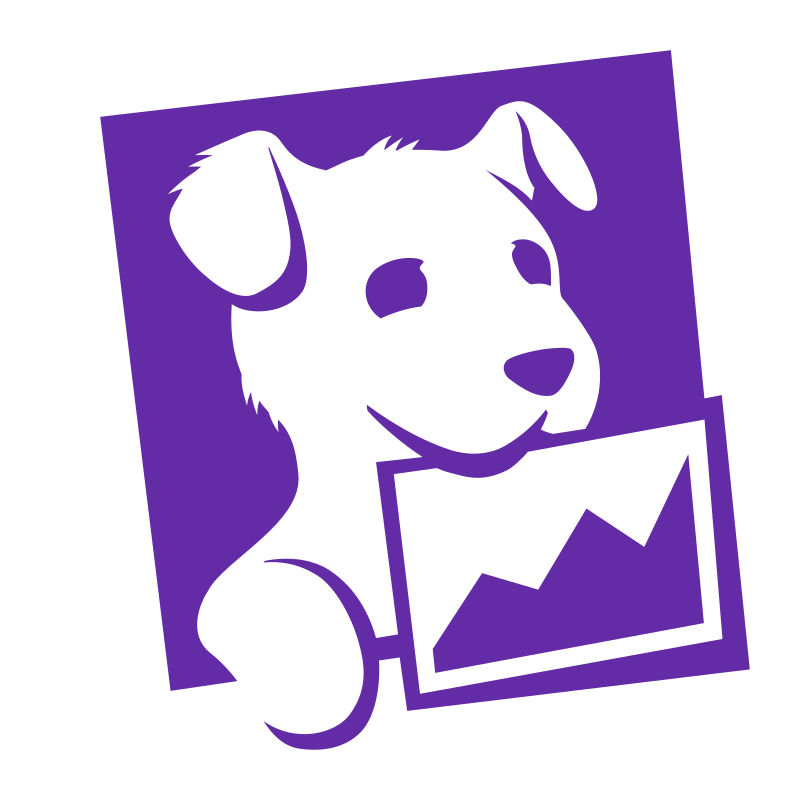
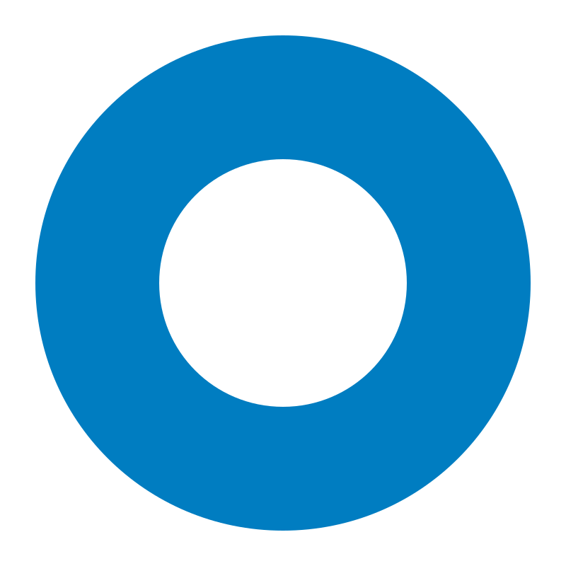

Response
IllustrativeHost Response Option
Available actions are shown according to platform capability and permissions.
For CISOs, privacy, compliance, legal, and IT teams
NoteTakerGuard helps security, privacy, compliance, and IT teams see which AI participants enter their meetings, determine whether that activity is authorized, and preserve a clear record of what was observed.
Built for regulated organizations across Zoom, Microsoft Teams, and Google Meet. It does not record the meeting itself.
NoteTakerGuard supports meeting-governance, security, privacy, and internal review workflows. It does not certify compliance, determine legal obligations, or replace qualified counsel, compliance officers, or required regulatory controls.
The commercial starting point
Connect an approved meeting platform, observe real meetings in scope for 48 hours, receive a report built from genuine findings, and decide whether a paid deployment makes sense.
Three-step evaluation
Test NoteTakerGuard in the meeting environment your teams already use.
Authorize the meetings and scope included in the evaluation.
Observe automated participant activity for 48 hours.
Decide on a paid pilot, technical review, expanded evaluation, or close-out.
Illustrative workflow
Platform-aware visibility, appropriate response options, and a structured evidence trail across your collaboration environment.

Microsoft Teams
Google MeetObserved Event
Checked Policy
Prompted Response
Recorded History
Available actions are shown according to platform capability and permissions.
Observed activity, policy signals, and actions are preserved for internal review.
Where configured, meeting events can support existing security workflows.
Coverage and limitations
Platform coverage varies. NoteTakerGuard shows what each connected platform can observe, what it cannot verify, and where customer action is required.
Exact capabilities and limitations are confirmed during onboarding or a technical review. Platform names identify integration targets only and do not imply endorsement or partnership.
What we secure
Purpose-built governance at the point where sensitive business conversations actually happen.
Continuously identify unapproved AI participants across your meeting estate.
Learn more →Support approved-tool policy workflows with response options matched to platform capabilities and permissions.
Learn more →
03Preserve a structured evidence trail for security, privacy, legal, and compliance teams to review.
Learn more → 04
04Elevated safeguards for board, leadership, M&A, and strategy discussions.
Learn more →Bring meeting intelligence into the security workflows your teams already trust.
Learn more →A consistent governance view with capabilities and limitations identified by platform.
Learn more →The hidden exposure
AI notetakers are entering sensitive meetings without consistent visibility, authorization, or control.
Network and endpoint controls were not designed to govern third-party AI participants inside live conversations.
Gain centralized control and real-time visibility across the full meeting lifecycle.
Preserve a structured record of what entered, what policy applied, and what action was taken.
One product. Three clear next steps.
Each team can evaluate the part of the buying decision that matters most to them.
See how NoteTakerGuard surfaces automated participants and supports platform-appropriate response workflows.
See the detection workflow →Review the structure used to preserve observed activity, policy signals, and actions for internal review.
Review the evidence model →Evaluate the risk in approved meetings before deciding whether a paid deployment is warranted.
Start a 48-hour audit →Built for high-trust industries
Protect M&A discussions, client transactions, and trading strategy.

↗ 02Govern meetings where protected health information may be discussed.
↗ 03Secure claims, underwriting, and policyholder conversations.

↗ 04Preserve privilege and confidential client communications.
↗ 05Protect sensitive operations and interagency discussions.
↗ 06Secure product roadmap, engineering, and customer data conversations.
↗Evidence model
The Shadow Audit report turns observed meeting activity into a structured evidence trail that security, privacy, compliance, legal, and IT teams can review together.
The preview uses fictionalized organizations, meetings, people, and findings. It is a sample—not a compliance certification or legal conclusion.
Northstar Health Group · Evaluation environment
Example only · No real customer or meeting data
Research & findings
Interactive briefings for security, compliance, privacy, and AI governance leaders—built to explore in the browser.
Works across your environment



Platform names identify integration targets only and do not imply endorsement or partnership.
Evaluation FAQ
Clear answers about data, platform permissions, response options, and what happens after the Shadow Audit.
No. NoteTakerGuard is designed to observe meeting-governance signals and automated participant activity; it does not record the meeting itself.
Within the approved scope, the audit observes platform-exposed meeting and participant events, policy signals, platform responses, and actions taken. The resulting report supports internal review.
The customer approves the platform connection, meeting scope, and permissions used for the evaluation. Data handling and retention expectations are confirmed during onboarding; NoteTakerGuard does not record the meeting itself.
Monitoring access pauses, while the report remains available. The customer chooses a paid pilot, technical review, expanded evaluation, or close-out.
No. Coverage and response options vary by platform, account configuration, host role, permissions, and the signals each provider makes available.
No. It supports meeting-governance, security, privacy, and internal review workflows. It does not determine legal obligations or replace counsel, compliance officers, or required regulatory controls.
Know what is in the room
Start with a real 48-hour Shadow Audit, review genuine findings and platform gaps, and choose the deployment decision that makes sense.
NoteTakerGuard does not record meetings, certify compliance, determine legal obligations, or replace qualified counsel or required controls.